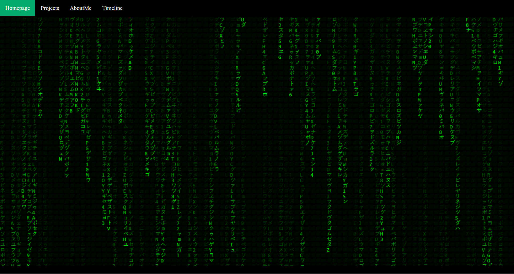

Timeline
My programming experience
2022

Homepage
I started work on this site to document my progress
2022
Season 12
FlamingoHub is a passion project all about flamingoes, it serves the purpose of protecting animals. This site also serves as a source for flamingo facts. Flamingohub is currently still in development, and more features will be added later, that might include but not limited to: a live chatting system, a news dashbord, profile system, video uploading and so much more. Currently you are able to read about flamingoes, play FlamingoRun, buy merch and enjoy daily flamingo facts at the bottom of this page.
2022
Season 11
I explored Cybersecurity more seriously
2022

Season 10
What is project euler?
Project euler is a curated list of mathematics and programming problems, they can be solved with almost any programming language, i will be solving them with a mix of p5 and vanilla JS
Project Euler is a series of challenging mathematical/computer programming problems that will require more than just
mathematical insights to solve. Although mathematics will help you arrive at elegant and efficient methods, the use of a
computer and programming skills will be required to solve most problems.
The motivation for starting Project Euler, and its continuation, is to encourage the development of important problem-
solving skills and techniques, whilst providing a platform for the ingenuity of programmers rather than development of
programming skills.
2019

Cracking Popcat
I started disassembling popcat
2018

Season 8
Donec quam felis, ultricies nec, pellentesque eu,
pretium quis, sem. Nulla consequat massa quis enim. Donec pede justo, fringilla
vel, aliquet nec, vulputate eget, arcu. In enim justo, rhoncus ut, imperdiet a,
venenatis vitae, justo. Nullam dictum felis eu pede mollis pretium. Integer
tincidunt. Cras dapibus. Vivamus elementum semper nisi.
2018

Season 7
Quisque rutrum. Aenean imperdiet. Etiam ultricies
nisi vel augue. Curabitur ullamcorper ultricies nisi. Nam eget dui. Etiam rhoncus.
Maecenas tempus, tellus eget condimentum rhoncus, sem quam semper libero, sit amet
adipiscing sem neque sed ipsum. Nam quam nunc, blandit vel, luctus pulvinar,
hendrerit id, lorem. Maecenas nec odio et ante tincidunt tempus.
2017

Season 6
Vivamus elementum semper nisi. Aenean vulputate eleifend
tellus. Aenean leo ligula, porttitor eu, consequat vitae, eleifend ac, enim.
Aliquam lorem ante, dapibus in, viverra quis, feugiat a, tellus. Phasellus viverra
nulla ut metus varius laoreet. Quisque rutrum.
2017

Season 5
Donec pede justo, fringilla
vel, aliquet nec, vulputate eget, arcu. In enim justo, rhoncus ut, imperdiet a,
venenatis vitae, justo. Nullam dictum felis eu pede mollis pretium. Integer
tincidunt. Cras dapibus. Vivamus elementum semper nisi. Aenean vulputate eleifend
tellus. Aenean leo ligula, porttitor eu, consequat vitae, eleifend ac, enim.
Aliquam lorem ante, dapibus in, viverra quis, feugiat a, tellus. Phasellus viverra
nulla ut metus varius laoreet. Quisque rutrum. Aenean imperdiet. Etiam ultricies
nisi vel augue. Curabitur ullamcorper ultricies nisi.
2016

Season 4
Nullam dictum felis eu pede mollis pretium. Integer
tincidunt. Cras dapibus. Vivamus elementum semper nisi. Aenean vulputate eleifend
tellus. Aenean leo ligula, porttitor eu, consequat vitae, eleifend ac, enim.
Aliquam lorem ante, dapibus in, viverra quis, feugiat a, tellus. Phasellus viverra
nulla ut metus varius laoreet.
2016

Season 3
Curabitur ullamcorper ultricies nisi. Nam eget dui. Etiam rhoncus.
Maecenas tempus, tellus eget condimentum rhoncus, sem quam semper libero, sit amet
adipiscing sem neque sed ipsum. Nam quam nunc, blandit vel, luctus pulvinar,
hendrerit id, lorem. Maecenas nec odio et ante tincidunt tempus. Donec vitae
sapien ut libero venenatis faucibus. Nullam quis ante. Etiam sit amet orci eget
eros faucibus tincidunt. Duis leo. Sed fringilla mauris sit amet nibh.
2015

Season 2
Aenean vulputate eleifend
tellus. Aenean leo ligula, porttitor eu, consequat vitae, eleifend ac, enim.
Aliquam lorem ante, dapibus in, viverra quis, feugiat a, tellus. Phasellus viverra
nulla ut metus varius laoreet. Quisque rutrum. Aenean imperdiet. Etiam ultricies
nisi vel augue. Curabitur ullamcorper ultricies nisi. Nam eget dui.
2015

Season 1
Donec pede justo, fringilla
vel, aliquet nec, vulputate eget, arcu. In enim justo, rhoncus ut, imperdiet a,
venenatis vitae, justo. Nullam dictum felis eu pede mollis pretium. Integer
tincidunt. Cras dapibus. Vivamus elementum semper nisi. Aenean vulputate eleifend
tellus. Aenean leo ligula, porttitor eu, consequat vitae, eleifend ac, enim.
Aliquam lorem ante, dapibus in, viverra quis, feugiat a, tellus.